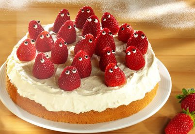

Krem Şantili Çilekli Pasta
Şirin çilek süslemeleri ile dikkat çeken bir çilekli pasta tarifi.
Tarif: İrem Özkul

Kaç kişilik: 8 Kişilik
Hazırlama Süresi: 40 Dakika
Pişirme Süresi: 25-30 Dakika
Krem Şantili Çilekli Pasta İçin Malzemeler
- 1 su bardağı un
- Yarım çay bardağı mısır nişastası
- 1 paket hamur kabartma tozu
- 100gr margarin
- 1,5 çay bardağı toz şeker
- 1 paket şekerli vanilin
- 4 yumurta
- 1 limon kabuğu rendesi
Krem Şantili Çilekli Pasta Nasıl Yapılır
- Un, nişasta ve hamur kabartma tozunu karıştırıp eleyin.
- Ayrı bir kapta margarin, toz şeker ve şekerli vanilini mikser ile 2 dakika çırpın.
- Yumurtaları ekleyip 1 dakika çırpın.
- Un karışımı ve limon kabuğu rendesini ekleyip 2 dakika daha çırpın.
- Hamuru kalıba dökün ve pişirin.
- Fırından çıkarıp soğumaya bırakın.
- Soğuyan keki kalıptan çıkarıp servis tabağına alın.
- Yarım su bardağı süte 1 yemek kaşığı toz şekeri ekleyip karıştırın ve keki ıslatın.
Afiyet Olsun